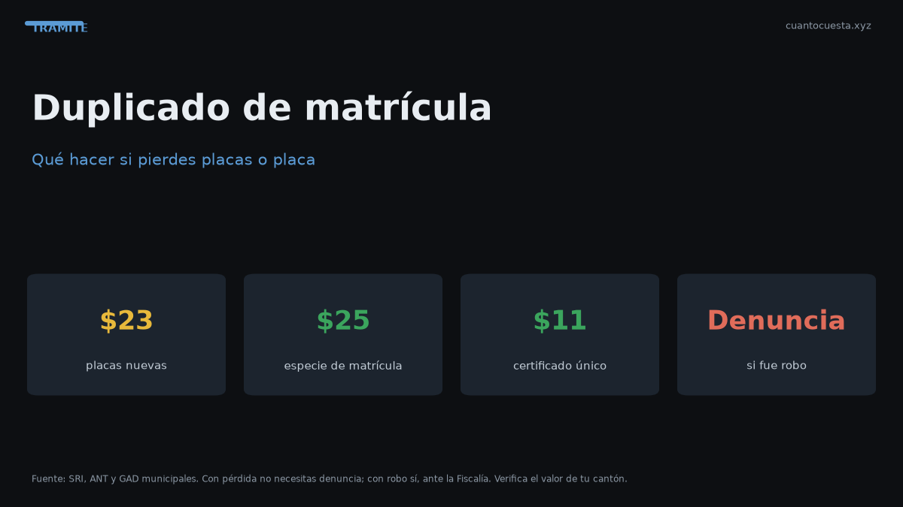

Duplicado de matrícula y placas en Ecuador: qué hacer si las pierdes
Perdiste o te robaron las placas: pasos, denuncia, requisitos, costos ($23 placas, $25 especie, $11 certificado) y tiempos del duplicado en la ANT.

Si perdiste las placas o te las robaron, el duplicado se solicita en la ANT y cuesta alrededor de $23 el par de placas (motos $13), más la especie de matrícula de $25 y los certificados del trámite. Si fue robo, el orden cambia: primero la denuncia, después el duplicado.
No puedes seguir circulando con una sola placa o sin ella: eso es una infracción de tránsito. El trámite es rápido si llevas todo en orden, pero falla casi siempre por el mismo motivo: papeles incompletos o deudas pendientes.
Pérdida vs. robo: el primer paso no es el mismo
| Situación | Primer paso | Por qué |
|---|---|---|
| Pérdida (se cayó, se rompió, se traspapeló) | Ir directo a solicitar el duplicado | No hay delito que denunciar |
| Robo o hurto | Denuncia en Fiscalía o Policía | El documento robado puede usarse para cometer infracciones a tu nombre |
| Retención por autoridad | Retiro en la entidad donde quedaron | Necesitas el acta o comprobante |
La denuncia por robo no es una formalidad opcional: es tu respaldo si esas placas aparecen después en un vehículo cometiendo infracciones o participando en un delito. Sin denuncia, cualquier multa que se genere con tu número de placa cae primero sobre ti y tendrás que probar que no fuiste.
Si fue robo: denuncia paso a paso
- Acude a la Fiscalía o a una unidad de policía y presenta la denuncia por el robo de las placas (o del vehículo completo, si aplica).
- Describe el hecho: lugar, hora, circunstancias y el número de placa exacto.
- Pide copia o constancia de la denuncia: es el documento que vas a presentar en la ANT.
- Con esa constancia, solicita el duplicado de placas y la nueva especie.
Si fue pérdida: sin denuncia
No hace falta denuncia. Se solicita el duplicado directamente, con los documentos de propiedad y el pago de los valores. Si las placas se rompieron, lleva los restos si los tienes: ayuda a confirmar el número.
El trámite paso a paso
- Reúne los documentos: cédula del propietario, matrícula o CUV del vehículo y la constancia de denuncia si fue robo.
- Verifica que estés al día: con multas pendientes o matrícula atrasada, el sistema suele bloquear el trámite.
- Solicita el duplicado en la ventanilla de la ANT o del GAD habilitado para matriculación.
- Paga los valores: placas, especie y certificados.
- Recibe las placas nuevas y colócalas. Confirma que el número corresponda al registrado.
- Actualiza tu documentación si el duplicado vino con nueva especie de matrícula.
Cuánto cuesta el duplicado
| Concepto | Costo referencial |
|---|---|
| Placas nuevas o duplicado (par) | $23,00 |
| Placas para moto | $13,00 |
| Especie de matrícula | $25,00 |
| Certificado Único Vehicular (CUV) | $7,50 |
| Certificados adicionales del trámite | ~$11,00 (varía por entidad) |
Los valores son referenciales. Las tasas de trámite cambian por resolución y algunas oficinas cobran adicionales por emisión o por servicios. Confirma el monto exacto en tu ventanilla antes de pagar.
Tiempos reales
El duplicado de placas no suele ser un trámite de meses: en la mayoría de oficinas se entrega el mismo día o en pocos días hábiles, siempre que las placas se impriman localmente. Cuando la entrega depende de un centro de emisión externo, el tiempo se alarga.
| Etapa | Tiempo referencial |
|---|---|
| Denuncia (si fue robo) | 1 día |
| Solicitud y pago | Mismo día |
| Emisión y entrega de placas | Mismo día a pocos días hábiles |
| Especie de matrícula impresa | Mismo día |
Si te dicen que "el sistema está caído" o que "no hay placas", pide el número de ticket o el comprobante de solicitud. Sin comprobante no tienes forma de reclamar después ni de demostrar que el trámite está en curso.
¿Puedo circular mientras espero?
No de forma indefinida. Circular sin placas o con una sola placa es infracción. Si estás en trámite, lo prudente es no mover el vehículo hasta tener el juego completo, salvo casos expresamente autorizados por la autoridad.
Si el duplicado se demora, consulta en la ANT si existe un permiso o constancia de trámite en curso para tu caso. No asumas que la solicitud basta para circular.
Requisitos que suelen trabar el trámite
- Multas o infracciones pendientes.
- Matrículas de años anteriores sin pagar.
- Datos del propietario desactualizados en el registro.
- Vehículo con gravamen o reserva de dominio vigente.
- Cambio de motor o de color no declarado.
Cualquiera de estos puntos puede detener la solicitud. Revísalos antes de hacer fila: casi todas las devoluciones de ventanilla vienen de esta lista.
Dónde se hace
El duplicado se gestiona en oficinas de la ANT y en los GAD municipales habilitados para matriculación, según la ciudad. Algunos trámites se pueden iniciar en línea y finalizar en ventanilla. Verifica en los canales oficiales de la ANT cuál es la sede que corresponde a tu placa y qué horarios maneja.
Si el vehículo está en otra ciudad o provincia, confirma si puedes hacer el trámite donde resides o si debes acudir a la jurisdicción de matrícula. Ese detalle puede costarte un viaje completo.
Resumen práctico
- Robo: denuncia primero, luego duplicado. Pérdida: directo al duplicado.
- Costos referenciales: placas $23 (motos $13), especie de matrícula $25, CUV $7,50 y certificados adicionales alrededor de $11.
- Reúne cédula, matrícula o CUV y constancia de denuncia si fue robo.
- Sin multas pendientes ni matrícula atrasada el trámite fluye; con ellas, se bloquea.
- La entrega suele ser el mismo día o en pocos días hábiles.
- No circules sin ambas placas: es infracción y te expone a multa.
Los valores son referenciales para 2026 y varían por oficina y por tipo de vehículo. Confirma costos, requisitos y horarios en la ANT o tu GAD antes de iniciar el trámite.
Sigue leyendo
Calendario de matriculación en Ecuador: qué mes te toca según tu placa
La matrícula se paga según el último dígito de tu placa. Revisa qué mes te corresponde, la mult
Cambio de características del vehículo en Ecuador: color, motor y carrocería
Cambiar el color, el motor o la carrocería de tu auto exige declararlo en la ANT: cuándo es obl
Certificado Único Vehicular (CUV) en Ecuador: qué es y cómo obtenerlo
El Certificado Único Vehicular (CUV) cuesta $7,50 en Ecuador. Qué información contiene, cuándo
Cómo hacer el traspaso de dominio de un vehículo en Ecuador (paso a paso)
Traspaso de dominio en Ecuador paso a paso: los 4 pasos ante notaría y ANT, el impuesto del 1%
Impuesto del 1% por compraventa de vehículos usados en Ecuador
El impuesto por compraventa de vehículos usados en Ecuador es el 1% sobre el mayor valor entre
Cómo usamos estos datos
Las cifras de esta guía provienen de fuentes públicas oficiales y tarifarios de concesionarios publicados. Los valores son referenciales: tasas municipales, promociones y precios de repuestos varían. Verifica siempre en la entidad o concesionario antes de decidir.